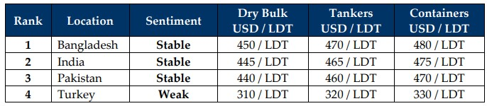

inWeekly Demolition Reports20/01/2025

As President Trump’s inauguration and looming tariffs lie days ahead, outgoing President Biden’s unrelenting effortstowards attaining a Gaza ceasefire deal finally saw fruition this week with the release of the first set of Israeli hostages marking their returns home. This ceasefire could also lower attacks on commercial vessels traversing the Red Sea shipping lanes and resume the regular flow of sea traffic in the area, helping ease global inflation and along with 2024’s economic hangover that is still rummaging through the ship recycling industry. As oil markets strengthen even more this week, closing at nearly USD 77.80/barrel, stresses resulting from the recent sanctions against Russia and China’s shipping companies / dark fleets slowly starts show effect. Likely to make matters worse is another intended interest rate cut by the U.S. Feds as domestic inflation continues to cool and the U.S. Dollar continues to hammer its way through ship recycling nation currencies, as nearly all locations reported dips this week, with the Bangladeshi Taka taking the largest slice of the week’s depreciation pie. Even the Baltic Shipping Index has been reporting an overall downward trend in nearly all sectors, which has caused dry bulk markets to close another week with a near 6% decline. As forecasted in weeks prior and based on the trajectory of charter rates through the tail end of 2024 and even thus far in 2025, ship recycling markets should continue to enjoy a healthier Q1 of vessel introductions, as respective port positions enjoy fresh arrivals in both India and Bangladesh week after week, even highlighting the 48K LDT of recycling tonnage at both anchorages.
Yet, along with the jilted state of global economies, ship recycling destinations suffered worrying reversals in vessel prices of late, primarily on the back of weaker currencies, depressed sentiments, and overall declining steel plate prices which, for the first time in a long time, firmed across the board except in Turkey and Bangladesh (who still remains atop the market rankings). As the supply of vessels starts to increase after 2024 was awarded the lowest year for recycling volumes in over a decade, the exit of overaged vessels from operating fleets has been consistently delayed due to the incredible performance of freight markets through the first 3 Quarters of 2024. Given that most of these units are likely starting to come off charter with the turn of the year, a raft of 90s built drybulk (mostly Panamax) vessels were suddenly up for sale at the same time, primarily from Chinese ship owners looking to tie up pre–Chinese New Year holiday loose ends, and this increase in supply has set a damaging pressure on the sub-continent markets, as demand has remained forcibly in check via the collapsing state of fundamentals. As such, vessel offers are starting to get shaky once again. Bangladesh has been the hardest hit this year, with up to USD 30/LDT wiped off vessel prices over a couple of weeks. And those recyclers who were keen to negotiate and fill dormant plots are now pleasantly booked with cheaper tonnage for the near future. Whilst the supply of vessels has largely been vintage bulkers and even a few LNGs were seen, tankers and containers remain at large and are likely to come at scattered stages across the year. The question of what to do with the raft of elderly / eventually dissolute tankers on Biden’s recent sanctions lists when they eventually show up for sale, remain to be seen. For now, the overall ship recycling outlook looks uncertain once again, especially as ship owners consistently look to achieve the next highest priced sale and ever exuberant cash buyers remain eager to please, driving prices up rather than enjoying the present.
For Week 3 of 2025, GMS Market Rankings / vessel indications are as below.

📄 Download PDF: Ship-recycling-market-insight-Week-03-01-17-2025-Tumbling_Dice.pdfSource: GMS,Inc.https://www.gmsinc.net/gms_new/index.php/web